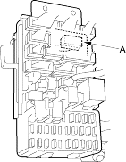
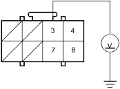
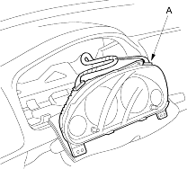
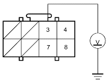

- Turn the ignition switch OFF.
- Disconnect the F3o connector (A) from the under-dash fuse/relay box.

- Turn the ignition switch ON (II).
- Check for voltage between the No. 3 terminal of the O1i connector and body ground. There should be 0.5 V or less.
O1i CONNECTOR

Wire side of female terminals
Is the voltage as specified?
YES - Faulty OPDS unit; replace the OPDS unit. 
NO - Go to step 16.
- Turn the ignition switch OFF.
- Disconnect the C2 connector (A) from the gauge assembly.

- Turn the ignition switch ON (II).
- Check for voltage between the No. 3 terminal of the O1i connector and body ground. There should be 0.5 V or less.
O1i CONNECTOR

Wire side of female terminals
Is the voltage as specified?
YES - Short to power in the gauge assembly; replace the gauge assembly.
NO - Go to step 20.